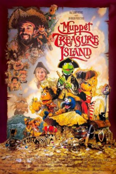

Country:United States, 100 minutes
Spoken languages:English
Genres:Adventure, Comedy, Family
Director(s):Brian Henson
Writer(s):Jerry Juhl, Robert Louis Stevenson, Kirk R. Thatcher, James V. Hart
Video Codec:Unknown
Number: 86

Certification:G
Storyline:
Young Jim Hawkins and his two best friends, Gonzo and Rizzo, embark on a voyage across the high seas in search of buried treasure, but soon find that not everyone onboard can be trusted.
Cast:
Tim Curry (as Long John Silver), Kevin Bishop (as Jim Hawkins), Billy Connolly (as Billy Bones), Jennifer Saunders (as Mrs. Bluveridge), Dave Goelz (voice of The Great Gonzo / Dr. Bunsen Honeydew / Waldorf / Mudwell the Mudbunny / Zoot)
Medium: Media file,
Location: D:\$RECYCLE.BIN\$RP4ESGP\MUPPET_TREASURE_ISLAND.mp4
Loaned: No
Aspect ratio: Unknown